Report iris_run¶
Best results in hall of fame¶
| measure | value | individual |
|---|---|---|
| mean accuracy | 0.891467 | 14286 |
| max accuracy | 0.96 | 14286 |
| min accuracy | 0.526667 | 14286 |
| mean kappa | 0.8372 | 14286 |
| max kappa | 0.94 | 14286 |
| min kappa | 0.29 | 14286 |
| mean log_loss | 0.622934 | 7580 |
| max log_loss | 2.74397 | 11770 |
| min log_loss | 0.396792 | 8630 |
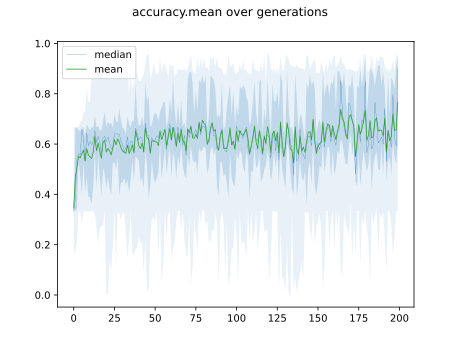
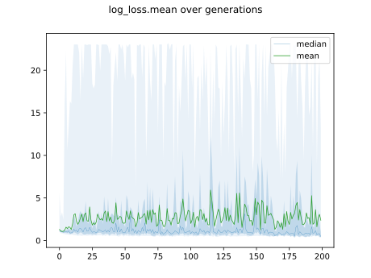
Individuals in hall of fame¶
Individual 14286¶
| key | value |
|---|---|
| mean accuracy: | 0.891467 |
| mean kappa: | 0.8372 |
| mean log_loss: | 0.566518 |
| number of edges | 94 |
| number of hidden nodes | 33 |
| number of layers | 16 |
| birth | 159 |
| number of mutations | 83 |
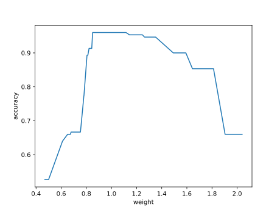
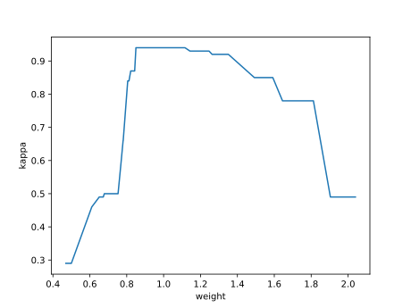
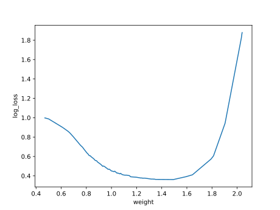
Confusion matrix¶
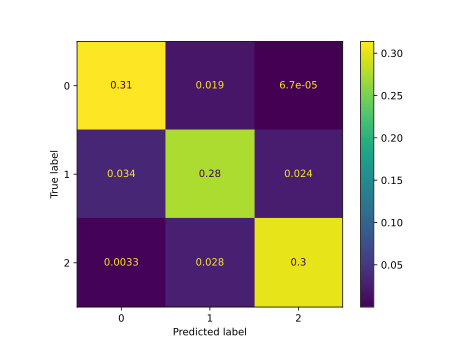
Network¶
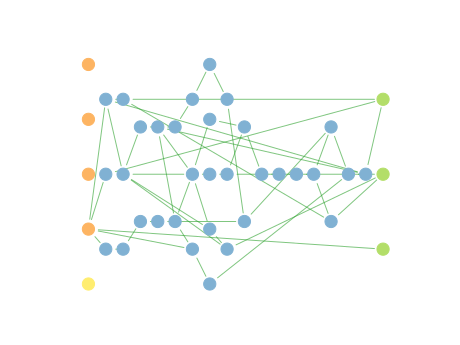
Individual 16027¶
| key | value |
|---|---|
| mean accuracy: | 0.884333 |
| mean kappa: | 0.8265 |
| mean log_loss: | 0.564729 |
| number of edges | 100 |
| number of hidden nodes | 36 |
| number of layers | 18 |
| birth | 179 |
| number of mutations | 89 |
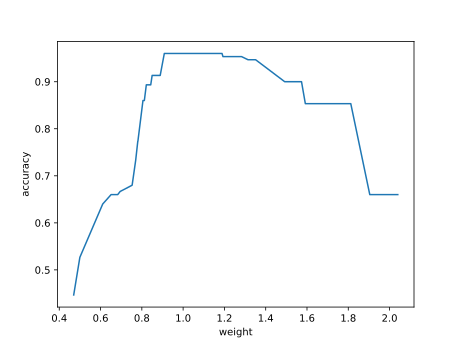
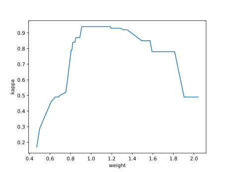
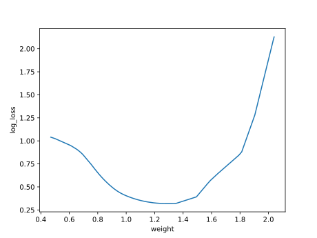
Confusion matrix¶
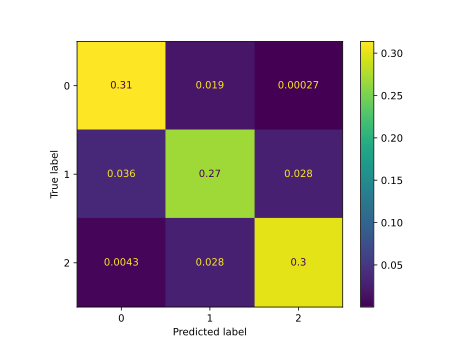
Network¶
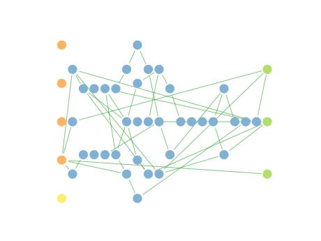
Individual 11770¶
| key | value |
|---|---|
| mean accuracy: | 0.883067 |
| mean kappa: | 0.8246 |
| mean log_loss: | 0.61932 |
| number of edges | 85 |
| number of hidden nodes | 29 |
| number of layers | 14 |
| birth | 131 |
| number of mutations | 74 |
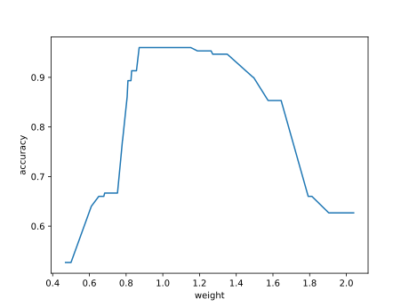
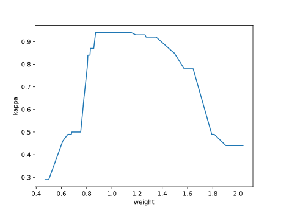
Confusion matrix¶
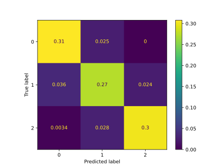
Network¶
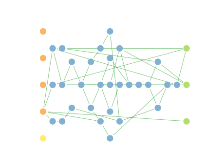
Individual 12911¶
| key | value |
|---|---|
| mean accuracy: | 0.883067 |
| mean kappa: | 0.8246 |
| mean log_loss: | 0.618369 |
| number of edges | 87 |
| number of hidden nodes | 30 |
| number of layers | 14 |
| birth | 144 |
| number of mutations | 76 |
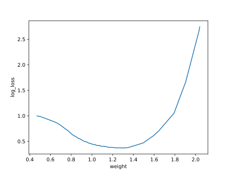
Confusion matrix¶
Network¶
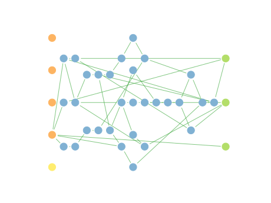
Individual 14413¶
| key | value |
|---|---|
| mean accuracy: | 0.8828 |
| mean kappa: | 0.8242 |
| mean log_loss: | 0.589973 |
| number of edges | 94 |
| number of hidden nodes | 33 |
| number of layers | 16 |
| birth | 161 |
| number of mutations | 84 |
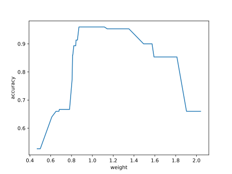
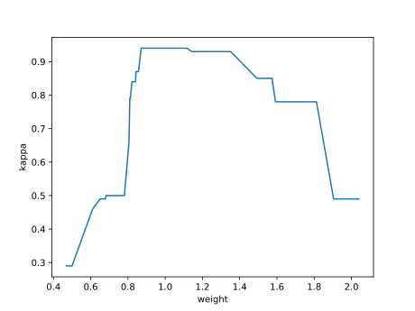
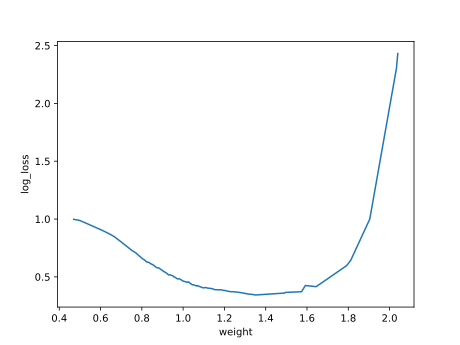
Confusion matrix¶
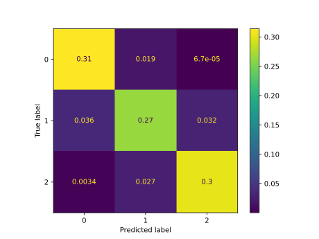
Network¶
Individual 16748¶
| key | value |
|---|---|
| mean accuracy: | 0.879333 |
| mean kappa: | 0.819 |
| mean log_loss: | 0.580244 |
| number of edges | 101 |
| number of hidden nodes | 37 |
| number of layers | 18 |
| birth | 187 |
| number of mutations | 92 |
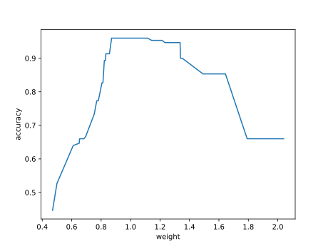
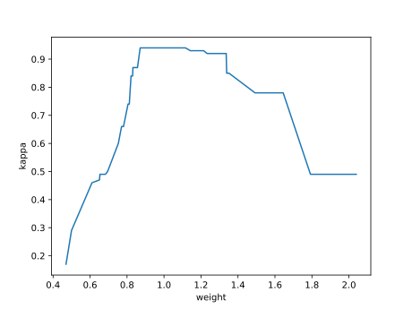
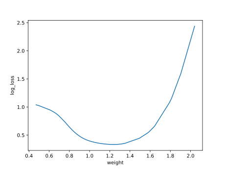
Confusion matrix¶
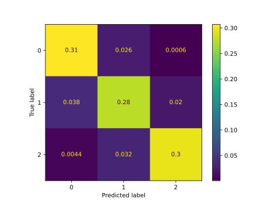
Network¶
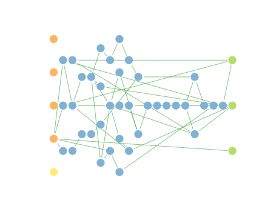
Individual 7580¶
| key | value |
|---|---|
| mean accuracy: | 0.877 |
| mean kappa: | 0.8155 |
| mean log_loss: | 0.622934 |
| number of edges | 74 |
| number of hidden nodes | 24 |
| number of layers | 10 |
| birth | 85 |
| number of mutations | 58 |
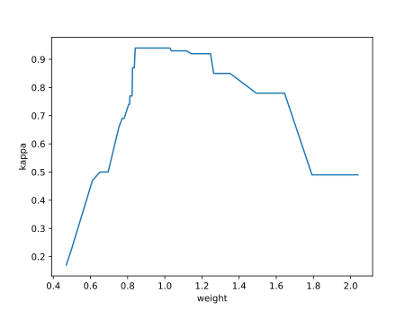
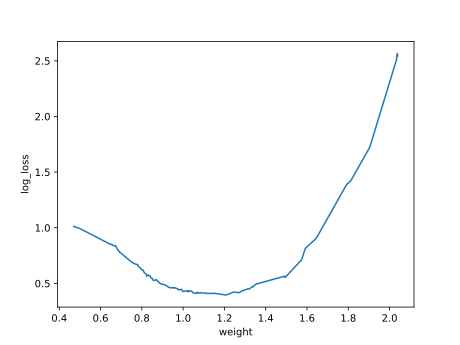
Confusion matrix¶
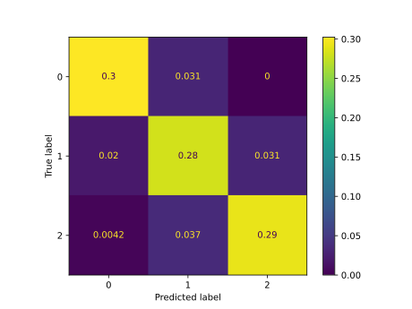
Network¶
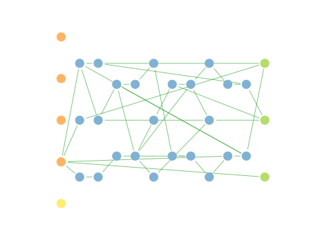
Individual 8029¶
| key | value |
|---|---|
| mean accuracy: | 0.8752 |
| mean kappa: | 0.8128 |
| mean log_loss: | 0.616779 |
| number of edges | 74 |
| number of hidden nodes | 24 |
| number of layers | 10 |
| birth | 90 |
| number of mutations | 60 |
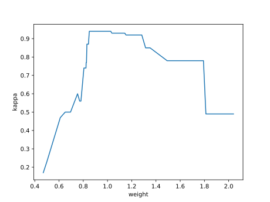
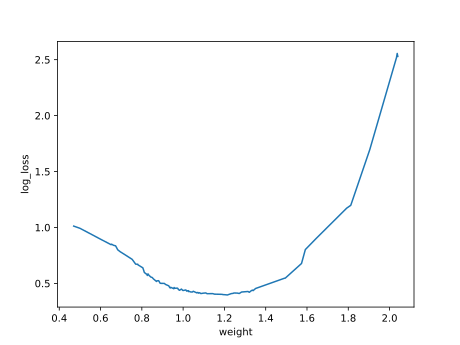
Confusion matrix¶
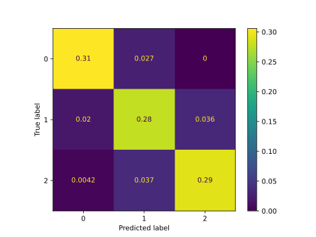